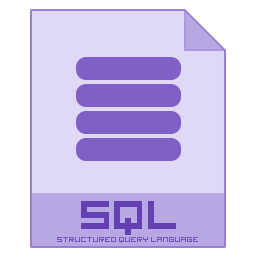

Live system snapshot
- StackWindows / Linux / Networking
- FocusIT support & automation
- StrengthHands‑on troubleshooting
- StatusActively looking for roles
Ivan Bogdanov Ivanov · IT & Automation
Computer Systems Technician student in Toronto focused on Windows 11, Windows Server 2025, networking fundamentals and practical automation that removes repetitive work for students, freelancers and small teams.
Live system snapshot
Think of me as your on‑call tech person: I fix issues, document what I did, and leave you with a setup you understand.
Clean and optimize slow machines, organize storage, fix annoying popups, set up backups, and make sure your files are safe but easy to find.
Get rid of “unidentified network” and random disconnects. I configure Wi‑Fi, routers, IP addresses and basic firewall rules so everything just works.
Small Python or Bash scripts and AI workflows that rename files, process reports, send alerts or answer common questions for you automatically.
Landing pages and personal sites that look good on phones and desktops, are easy to update, and load fast.
A mix of labs, experiments and real problems I solved. These are the kinds of things I can do for you.
Collection of React apps, CI/CD experiments, Python & Bash scripts and system‑automation tools I use to learn and speed up my own work.
Browse repositories →Packet Tracer topologies with routers, switches, VLANs and ACLs, plus real “why is my Wi‑Fi dead” troubleshooting for friends and classmates.
Ask for a topology walkthrough →Workflows that connect forms, AI assistants and notifications to reply automatically, summarize messages or generate simple reports.
Request a live demo →Visual kits for student projects and small brands: banners, simple logos, social posts and cleaned up presentations.
See a mini‑portfolio →These are the tools I actually use when troubleshooting, building labs and scripting solutions.

A simple 4‑step process so you always know what’s happening and what comes next.
You tell me what’s broken or what you want to build. I ask a few questions and give you a realistic next step.
I outline what I’ll do, tools I’ll use, rough timing and pricing. You confirm you’re happy and we start.
I implement the solution, keep notes and send you short updates as I go so you are never guessing.
We test everything together. I show you how it works, what changed, and what to do if something breaks again.
Tell me briefly what you need help with and I’ll reply with possible options and an estimate.
Use this email for job opportunities, internships, IT support, or collaboration. I usually reply within one business day.